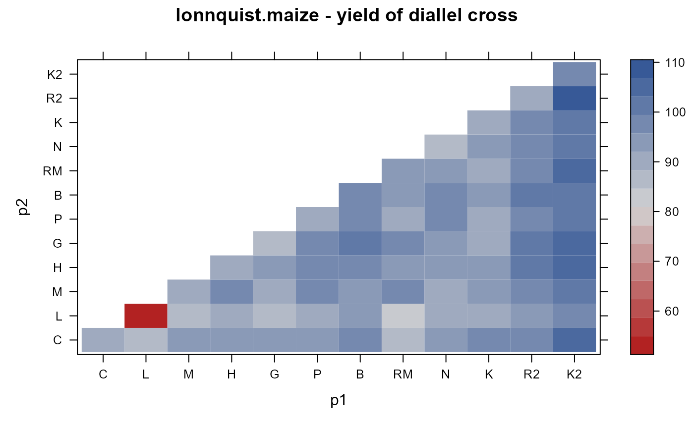

lonnquist.maize.RdHalf diallel of maize
data("lonnquist.maize")
A data frame with 78 observations on the following 3 variables.
p1parent 1 factor
p2parent 2 factor
yieldyield
Twelve hybrids were selfed/crossed in a half-diallel design planted in 3 reps at 2 locations in 2 years. The data here are means adjusted for block effects.
J. H. Lonnquist, C. O. Gardner. (1961) Heterosis in Intervarietal Crosses in Maize and Its Implication in Breeding Procedures. Crop Science, 1, 179-183. Table 1.
Mohring, Melchinger, Piepho. (2011). REML-Based Diallel Analysis. Crop Science, 51, 470-478. http://doi.org/10.2135/cropsci2010.05.0272
C. O. Gardner and S. A. Eberhart. 1966. Analysis and Interpretation of the Variety Cross Diallel and Related Populations. Biometrics, 22, 439-452. http://doi.org/10.2307/2528181
library(agridat) data(lonnquist.maize) dat <- lonnquist.maize dat <- transform(dat, p1=factor(p1, levels=c("C","L","M","H","G","P","B","RM","N","K","R2","K2")), p2=factor(p2, levels=c("C","L","M","H","G","P","B","RM","N","K","R2","K2"))) libs(lattice) redblue <- colorRampPalette(c("firebrick", "lightgray", "#375997")) levelplot(yield ~ p1*p2, dat, col.regions=redblue, main="lonnquist.maize - yield of diallel cross")#>mat[upper.tri(mat)] <- t(mat)[upper.tri(mat)] # make symmetric diag(mat) <- NA round(rowMeans(mat, na.rm=TRUE),1)#> C L M H G P B RM N K R2 K2 #> 94.8 89.2 95.0 96.4 95.3 95.2 97.3 93.7 95.0 94.0 98.9 102.4## C L M H G P B RM N K R2 K2 ## 94.8 89.2 95.0 96.4 95.3 95.2 97.3 93.7 95.0 94.0 98.9 102.4 # Mohring 2011 used 6 varieties to calculate GCA & SCA # Matches Table 3, column 2 d2 <- subset(dat, is.element(p1, c("M","H","G","B","K","K2")) & is.element(p2, c("M","H","G","B","K","K2"))) d2 <- droplevels(d2) # asreml4 libs(asreml) m2 <- asreml(yield~ 1, data=d2, random = ~ p1 + and(p2))#> ASReml: Fri Aug 16 15:00:16 2019 #> #> LogLik S2 DF wall cpu #> -42.1442 18.4535 20 15:00:16 0.0 #> -42.0278 17.6439 20 15:00:16 0.0 #> -41.9342 16.7446 20 15:00:16 0.0 #> -41.9011 16.0176 20 15:00:16 0.0 #> -41.9007 15.9308 20 15:00:16 0.0 #> -41.9007 15.9294 20 15:00:16 0.0 #> #> Finished on: Fri Aug 16 15:00:16 2019 #> #> LogLikelihood Converged#> effect component std.error z.ratio constr #> p1!p1.var 3.865 3.774 1 P #> R!variance 15.93 5.817 2.7 P## effect component std.error z.ratio con ## p1!p1.var 3.865 3.774 1 Positive ## R!variance 15.93 5.817 2.7 Positive # Calculate GCA effects m3 <- asreml(yield~ p1 + and(p2), data=d2)#> ASReml: Fri Aug 16 15:00:16 2019 #> #> LogLik S2 DF wall cpu #> -34.0862 15.9294 15 15:00:16 0.0 #> -34.0862 15.9294 15 15:00:16 0.0 #> #> Finished on: Fri Aug 16 15:00:16 2019 #> #> LogLikelihood Converged#> effect #> p1_M -1.46200 #> p1_H -0.19950 #> p1_G -2.16200 #> p1_B 1.48800 #> p1_K -1.78700 #> p1_K2 4.12550 #> (Intercept) 91.77014# Matches Gardner 1966, Table 5, Griffing method # ---------------------------------------------------------------------------- if(0){ # Mohring 2011 used 6 varieties to calculate GCA & SCA # Matches Table 3, column 2 ## d2 <- subset(dat, p1 <!-- %in% c("M","H","G","B","K","K2") & --> ## p2 <!-- %in% c("M","H","G","B","K","K2")) --> ## d2 <- droplevels(d2) ## libs(asreml4) ## m2 <- asreml(yield~ 1, data=d2, random = ~ p1 + and(p2)) ## libs(lucid) ## vc(m2) ## ## effect component std.error z.ratio con ## ## p1!p1.var 3.865 3.774 1 Positive ## ## R!variance 15.93 5.817 2.7 Positive ## # Calculate GCA effects ## m3 <- asreml(yield~ p1 + and(p2), data=d2) ## coef(m3)$fixed-1.462 ## # Matches Gardner 1966, Table 5, Griffing method }